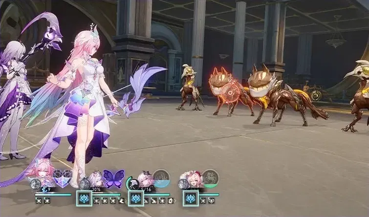

[Single Target]
Toughness Break: 10
Gains 1 "Recollection" point(s) and deals Ice DMG equal to 25%/ 50% of Cyrene's Max HP to one designated enemy.

[Support]
Gains 3 "Recollection" point(s) and deploys a Zone that lasts for 2 turns. The Zone's duration decreases by 1 at the start of Cyrene's every turn. While the Zone lasts, for each instance of DMG dealt by all ally targets, deals 1 additional instance of True DMG equal to 12%/ 24% of the original DMG. When Cyrene is downed, the Zone will also be dispelled.

[Summon]
Summons memosprite Demiurge, causes it to immediately gain 1 extra turn, and activates all teammates' Ultimate. Then, enters the "Ripples of Past Reverie" state. Enhances Basic ATK to "To Love and Tomorrow ♪" and can only use this Basic ATK. Increases Cyrene's and Demiurge's CRIT Rate by 25%/ 50%, and deploys the Zone effect from Skill with no duration limit. Can only be used once per battle. Demiurge's initial Max HP equals to 100% of Cyrene's Max HP.

[Support]
After using Technique, creates a Special Dimension that lasts for 30 second(s) around the character. Enemies within this Special Dimension enter the "This Moment, Forever" state. While in this state, enemies will cease all actions. Ally characters within this Special Dimension have 50% increased movement speed. After entering combat within the duration, deploys the Skill's Zone. Only 1 Dimension Effect created by allies can exist at the same time.

[Enhance]
When combat begins or after Cyrene takes action, other ally characters under any state and their memosprites gain "Future." When ally targets with "Future" take action, consumes "Future" to grant Cyrene 1 "Recollection" point(s). When Cyrene has 24 "Recollection" points, can activate Ultimate and dispel all debuffs on her. When she has 12 "Recollection" points during the "Ripples of Past Reverie" state, can activate Ultimate. After reaching the maximum, it can overflow by up to 27 points. While Cyrene is on the field, increases DMG dealt by all ally targets by 10%/ 20%.

[AoE]
Toughness Reduction: 30
Deals Ice DMG to all enemies equal to 30%/ 60% of Demiurge's Max HP.

[AoE]
Toughness Reduction: 30
Applies a buff to one designated ally character. When the character is a Chrysos Heir, the target gains a special effect. When the character is not a Chrysos Heir, increases the target's DMG dealt by 20% for 2 turns. This effect also applies on memosprites.
[Enhance]
Demiurge's SPD remains at 0, and it will not appear on the Action Order. While on the field, it is considered as Out-of-Bounds. When Cyrene's HP percentage changes, Demiurge's HP percentage will also change accordingly. While Demiurge is on the field, Cyrene's and Demiurge's Max HP increases by 12%/ 24%. After Demiurge uses abilities, decreases the duration of all Continuous Effects on this unit by 1.
[Enhance]
When Demiurge is summoned, dispels Crowd Control debuffs from all allies.
When a teammate's memosprite is summoned, it gains "Future." "Future" held by memosprites cannot be consumed.
When there are 1/2/3 Chrysos Heir(s) or Remembrance Path character(s) aside from Cyrene in the team, Cyrene gains 2/3/6 "Recollection" point(s) at the start of combat.
When Cyrene's SPD is at 180 or higher, increases all allies' DMG dealt by 20%. Then, for each point of SPD exceeded, increases Cyrene and Mem's Ice RES PEN by 2%, counting up to a maximum of 60 exceeded SPD points.